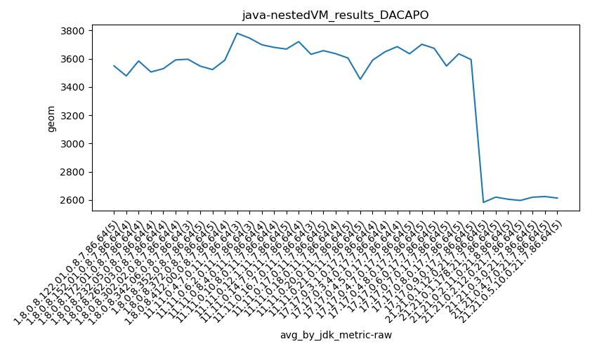
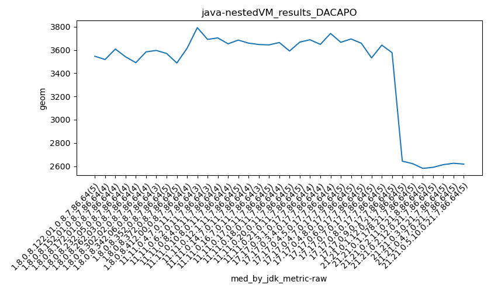

java- DACAPO
Context at bottom
/home/jvanek/git/benchmarks-in-nested-virtualisation-toolchain/final_results/nestedVM_results/nestedVM_results_J2DBENCH
java-
DACAPO
/home/jvanek/git/benchmarks-in-nested-virtualisation-toolchain/final_results/nestedVM_results/nestedVM_results_RADARGUNs3
java-
DACAPO
/home/jvanek/git/benchmarks-in-nested-virtualisation-toolchain/final_results/nestedVM_results/nestedVM_results_DACAPO
java-
DACAPO
nestedVM_results_DACAPO
final score
Expected number of java- JDKs: 37
1st avgmed_alljdks_metric:
/home/jvanek/git/benchmarks-in-nested-virtualisation-toolchain/final_results/result_processing.py /home/jvanek/git/benchmarks-in-nested-virtualisation-toolchain/final_results/nestedVM_results/nestedVM_results_DACAPO geom False
values: [3626, 3518, 3485, 3571, 3546, 3543, 3518, 3332, 3518, 3513, 3608, 3529, 3685, 3484, 3562, 3541, 3436, 3491, 3669, 3488, 3468, 3556, 3584, 3640, 3584, 3596, 3596, 3596, 3622, 3505, 3570, 3402, 3637, 3488, 3681, 3335, 3435, 3674, 3615, 3621, 3610, 3511, 3728, 3819, 3792, 3691, 3855, 3691, 3774, 3640, 3676, 3704, 3628, 3653, 3644, 3794, 3685, 3583, 3693, 3709, 3669, 3659, 3624, 3945, 3654, 3647, 3465, 3780, 3567, 3644, 3710, 3617, 3745, 3635, 3664, 3681, 3561, 3738, 3549, 3591, 3664, 3480, 3688, 3650, 2502, 3668, 3763, 3502, 3436, 3688, 3731, 3725, 3589, 3630, 3648, 3742, 3758, 3626, 3615, 3666, 3684, 3458, 3632, 3734, 3695, 3828, 3646, 3708, 3631, 3556, 3603, 3658, 3776, 3773, 3463, 3565, 3456, 3532, 3725, 3563, 3726, 3642, 3570, 3671, 3688, 3567, 3516, 3577, 3619, 2659, 2643, 2688, 2483, 2441, 2596, 2655, 2655, 2622, 2573, 2581, 2591, 2737, 2579, 2538, 2559, 2590, 2559, 2685, 2590, 2646, 2613, 2743, 2545, 2551, 2625, 2663, 2586, 2639, 2608, 2559, 2618, 2652, 2632, 2607]

Expected number of iterations: 5
final number of values: 164 out of 185
Pass rate: 88.6%
values: (2441, 3945, 3397.7865853658536, 3589)

** accuracy from all jdks and runs
more is better
MIN: 2441
MAX: 3945
AVG: 3397.7865853658536
MED: 3589
Relative differences 1:
MIN-MAX: 38.0 %
MIN-AVG: 28.0 %
MIN-MED: 32.0 %
MAX-MIN: -62.0 %
MAX-AVG: -16.0 %
MAX-MED: -10.0 %
AVG-MED: 5.0 %
stored to java-.properties. sort | uniq that!
2nd avgmed_by_jdk_metric:
values: [3549.2, 3477.75, 3583.75, 3505.75, 3529.0, 3591.0, 3596.0, 3547.2, 3522.6, 3589.25, 3779.6666666666665, 3745.6666666666665, 3698.5, 3679.75, 3667.8, 3720.5, 3630.6666666666665, 3656.6, 3635.25, 3604.4, 3454.2, 3589.25, 3648.0, 3685.25, 3634.8, 3701.6, 3673.2, 3548.2, 3634.4, 3593.4, 2582.8, 2620.2, 2605.2, 2596.6, 2619.6, 2624.2, 2613.6]

values: [3546, 3518, 3608, 3541, 3491, 3584, 3596, 3570, 3488, 3615, 3792, 3691, 3704, 3653, 3685, 3659, 3647, 3644, 3664, 3591, 3668, 3688, 3648, 3742, 3666, 3695, 3658, 3532, 3642, 3577, 2643, 2622, 2581, 2590, 2613, 2625, 2618]

values: (2582.8, 3779.6666666666665, 3425.264864864865, 3591.0)
values: (2581, 3792, 3435.0, 3608)

** accuracy from all jdks where runs were avged
more is better
MIN: 2582.8
MAX: 3779.6666666666665
AVG: 3425.264864864865
MED: 3591.0
Relative differences 1:
MIN-MAX: 32.0 %
MIN-AVG: 25.0 %
MIN-MED: 28.0 %
MAX-MIN: -46.0 %
MAX-AVG: -10.0 %
MAX-MED: -5.0 %
AVG-MED: 5.0 %
stored to java-.properties. sort | uniq that!
** accuracy from all jdks where runs were medianed
more is better
MIN: 2581
MAX: 3792
AVG: 3435.0
MED: 3608
Relative differences 1:
MIN-MAX: 32.0 %
MIN-AVG: 25.0 %
MIN-MED: 28.0 %
MAX-MIN: -47.0 %
MAX-AVG: -10.0 %
MAX-MED: -5.0 %
AVG-MED: 5.0 %
stored to java-.properties. sort | uniq that!
/home/jvanek/git/benchmarks-in-nested-virtualisation-toolchain/final_results/nestedVM_results/nestedVM_results_JMH
java-
DACAPO
/home/jvanek/git/benchmarks-in-nested-virtualisation-toolchain/final_results/nestedVM_results/nestedVM_results_SPECJBB
java-
DACAPO
/home/jvanek/git/benchmarks-in-nested-virtualisation-toolchain/final_results/nestedVM_results/nestedVM_results_RADARGUNs1
java-
DACAPO
pass rates:
nestedVM_results_DACAPO=88.6%
Context:
- nestedVM_results
- DACAPO